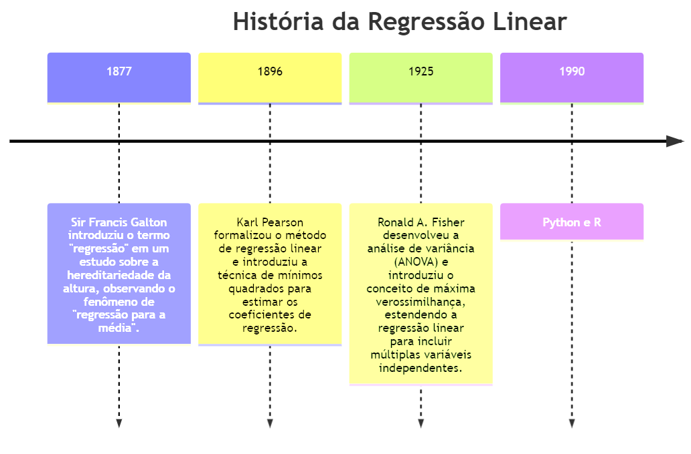

3 Introdução à Regressão Linear
Objetivo do capítulo Apresentar a definição, a história, a importância, vantagens limitações e exemplos da regressão linear.
3.1 Definição de Regressão Linear
A regressão linear é uma técnica estatística utilizada para modelar a relação entre uma variável dependente contínua e uma ou mais variáveis independentes, se for somente uma variável independente é chamado de regressão linear, com mais de uma variável independente será chamado de regressão múltipla. O objetivo principal é encontrar a melhor linha reta que descreve a relação entre as variáveis, minimizando a soma dos quadrados das diferenças entre os valores observados e os valores previstos.
Matematicamente, a equação da regressão linear (ou múltipla) pode ser expressa como:
\[y = \beta_0 + \beta_1x_1 + \beta_2x_2 + \cdots + \beta_nx_n + \epsilon\]
onde:
\(y\) é a variável dependente,
\(x_1, x_2, \ldots, x_n\) são as variáveis independentes,
\(\beta_0\) é o intercepto,
\(\beta_1, \beta_2, \ldots, \beta_n\) são os coeficientes das variáveis independentes,
\(\epsilon\) é o termo de erro.
3.2 História e Evolução do Conceito
O conceito de regressão linear começou com Sir Francis Galton, que introduziu o termo “regressão” em um estudo sobre a hereditariedade da altura em 1877. Ele observou que a altura dos filhos tendia a regredir em direção à média da altura dos pais, um fenômeno que ele chamou de “regressão para a média” [@Galton1877].
Posteriormente, Karl Pearson, expandiu o trabalho de Galton e formalizou o método de regressão linear. Em 1896, Pearson introduziu a técnica de mínimos quadrados para estimar os coeficientes de regressão, que se tornou a base para o método de regressão linear [@Pearson1896].
Além disso, Ronald A. Fisher, contribuiu significativamente para a regressão linear entre as décadas de 1920 e 1930. Ajudando a estender a regressão linear para incluir múltiplas variáveis independentes [@Fisher1925], a regressão múltipla. Fisher também introduziu o conceito de máxima verossimilhança, que aprimorou os métodos de estimação de parâmetros.
A introdução de métodos computacionais avançados e o surgimento de software estatístico, tais como R, Python e Stata, tornaram a aplicação da regressão linear mais acessível e poderosa. Isso permitiu o processamento de grandes volumes de dados e a aplicação de regressão linear em uma ampla gama de disciplinas científicas e industriais [@Chambers1992; @McKinney2010]. Veja na Figura 2.1 uma linha do tempo dessa evolução.

Python O Python foi criado por Guido van Rossum e lançado pela primeira vez em 1991. Van Rossum começou a desenvolver Python no final dos anos 1980 como um sucessor da linguagem ABC. A ideia era criar uma linguagem de programação que fosse fácil de entender e de usar, com uma sintaxe clara e legível. O nome “Python” foi escolhido como uma referência ao grupo de comédia britânico Monty Python, do qual Van Rossum era fã. Desde o seu lançamento, Python tem evoluído significativamente, com várias versões lançadas ao longo dos anos, incluindo as séries Python 2.x e Python 3.x, sendo esta última a mais atual e recomendada para novos projetos.
Linguagem R A linguagem de programação R surgiu em meados da década de 1990. Ela foi criada por Ross Ihaka e Robert Gentleman, dois estatísticos da Universidade de Auckland, na Nova Zelândia. O desenvolvimento inicial do R começou em 1992, e a primeira versão pública foi lançada em 1995. R foi projetada como uma linguagem para estatística e análise de dados, fortemente influenciada pela linguagem S, que foi desenvolvida anteriormente nos laboratórios da Bell. Uma das principais vantagens do R é a sua capacidade de fornecer uma ampla gama de ferramentas estatísticas e gráficas, tornando-o popular entre estatísticos, cientistas de dados e pesquisadores em várias disciplinas. Desde o seu lançamento, R tem se expandido com contribuições de uma comunidade ativa, levando ao desenvolvimento de inúmeros pacotes que ampliam suas capacidades.
3.3 Importância na Aprendizagem de Máquina
A regressão linear (usaremos somente o termo regressão linear, ou somente regressão, mas o mesmo se aplica a regressão múltipla) é muitas vezes utilizada como um ponto de partida para o entendimento de métodos mais complexos. Sua simplicidade e intuição tornam-na acessível para iniciantes, proporcionando uma maneira clara de compreender a relação linear entre variáveis independentes e dependentes [@mohri2018foundations].
Ela também é usada não apenas para prever resultados, mas também para compreender as relações subjacentes entre variáveis [@hastie2009; @james2013]. Essa capacidade de interpretar os coeficientes do modelo, oferece insights diretos sobre a influência de cada variável independente na variável dependente. Isso é crucial em aplicações onde a explicabilidade do modelo é tão importante quanto a previsão [@hastie2009].
A eficiência computacional da regressão linear permite seu uso em conjuntos de dados grandes e complexos. Ela serve como uma linha de base eficaz para a comparação com outros modelos mais sofisticados [@friedman2001elements]. Por último, o estudo da regressão linear ajuda os profissionais a entender as suposições estatísticas subjacentes e as implicações de suas violações, uma habilidade essencial na modelagem de dados [@montgomery2021].
3.4 Exemplos de Aplicação no Mundo Real
A regressão linear é uma ferramenta estatística amplamente utilizada em diversas áreas devido à sua simplicidade e eficácia na modelagem de relações entre variáveis. Um dos exemplos mais comuns de aplicação da regressão linear é na previsão de preços de imóveis. Neste contexto, a regressão linear é usada para estimar o preço de uma propriedade com base em características como localização, tamanho, e número de quartos. Esta abordagem permite que compradores e vendedores tenham uma melhor compreensão do valor de mercado de uma casa, considerando fatores relevantes que influenciam o preço. Uma das aplicabilidades da regressão na análise de mercado imobiliário é avaliação do preço de propriedades.
Outro exemplo é a análise de vendas em empresas. As organizações utilizam a regressão linear para prever vendas futuras com base em dados históricos. Essa previsão é utilizada na tomada de decisões estratégicas, como planejamento de estoque e campanhas de marketing. A capacidade de antecipar mudanças na demanda permite que as empresas se adaptem rapidamente ao mercado, melhorando sua eficiência operacional e maximizando lucros.
Na área das ciências da saúde, a regressão linear desempenha um papel na análise de dados clínicos. Pesquisadores utilizam essa técnica para explorar a relação entre variáveis como idade, pressão arterial e níveis de colesterol, para identificar fatores de risco para doenças. Este tipo de análise ajuda a estabelecer correlações essenciais para o desenvolvimento de estratégias de prevenção e tratamento.
Em engenharia, a regressão linear é aplicada no controle de qualidade para prever a resistência de materiais com base em suas propriedades físicas e químicas. Essa aplicação visa garantir a segurança e eficácia dos materiais utilizados em construção e manufatura. Ao identificar as propriedades que afetam a resistência, engenheiros podem otimizar processos de produção e desenvolver materiais mais robustos.
Exemplos de aplicação da regressão
Previsão de Preços de Imóveis: A regressão linear pode ser usada para prever o preço de uma casa com base em características como localização, tamanho, e número de quartos.
Análise de Vendas: Empresas utilizam regressão linear para prever vendas futuras com base em dados históricos, ajudando na tomada de decisões estratégicas.
Ciências da Saúde: Pesquisadores utilizam regressão linear para analisar a relação entre variáveis como idade, pressão arterial e colesterol, ajudando a identificar fatores de risco para doenças.
Engenharia: No controle de qualidade, a regressão linear pode ajudar a prever a resistência de materiais com base em suas propriedades físicas e químicas.
3.5 Vantagens e Limitações
Uma das principais vantagens da regressão linear é sua simplicidade e facilidade de interpretação. É uma técnica fácil de implementar, o que permite que até mesmo usuários sem formação avançada em estatística compreendam rapidamente as relações entre variáveis. Esta característica torna a regressão linear uma ferramenta acessível e amplamente utilizada em diversas áreas do conhecimento.
Além disso, a regressão linear é computacionalmente eficiente, pois requer menos recursos em comparação com modelos mais complexos. Essa eficiência a torna ideal para análise de grandes conjuntos de dados, onde a velocidade e a economia de recursos são críticas.
Por último, a regressão linear serve como base para modelos mais complexos de Machine Learning. Ela oferece uma compreensão inicial dos dados, permitindo que pesquisadores e analistas desenvolvam modelos mais sofisticados, como regressão polinomial e redes neurais, a partir desse fundamento. Essa característica faz da regressão linear uma etapa inicial crucial no processo de modelagem e análise de dados.
No entanto, é importante reconhecer as limitações da regressão linear. Ela assume uma relação linear entre as variáveis, o que nem sempre reflete a complexidade das interações no mundo real. Além disso, a presença de outliers pode distorcer os resultados, tornando a modelagem menos precisa. Por isso, é essencial que os analistas considerem essas limitações ao utilizar a regressão linear em suas pesquisas e práticas profissionais.
Vantagens e Limitações
Vantagens
Simplicidade e Interpretação: Fácil de implementar e interpretar, permitindo que usuários compreendam rapidamente as relações entre variáveis.
Eficiência Computacional: Requer menos recursos computacionais em comparação com modelos mais complexos.
Base para Modelos Complexos: Serve como base para entender e desenvolver modelos de Machine Learning mais avançados.
Limitações
Linearidade: Assume que a relação entre variáveis é linear, o que pode não ser verdade para todos os conjuntos de dados.
Sensibilidade a Outliers: Outliers podem influenciar significativamente os resultados da regressão linear.
Assunção de Independência: Pressupõe que as variáveis independentes são realmente independentes umas das outras, o que pode não ser o caso.
3.6 Exercícios
O que é Regressão Linear?
Uma técnica para classificar dados em categorias pré-definidas.
Um método estatístico para modelar a relação entre uma variável dependente contínua e uma ou mais variáveis independentes.
Um algoritmo de Machine Learning não supervisionado utilizado para clustering.
Uma técnica para prever séries temporais baseada em modelos de decomposição.
Qual é a principal função da Regressão Linear Simples?
Prever valores categóricos a partir de variáveis independentes.
Encontrar a linha reta que minimiza a soma dos quadrados das diferenças entre os valores observados e previstos.
Estimar a matriz de covariância entre variáveis dependentes.
Aplicar transformações não lineares para capturar complexidades nos dados.
Quem foi um dos pioneiros no desenvolvimento do conceito de regressão linear?
Albert Einstein
Francis Galton
Isaac Newton
Ada Lovelace
Qual das seguintes opções NÃO é uma aplicação típica de regressão linear?
Previsão de preços de imóveis.
Análise de tendências de mercado.
Detecção de anomalias em grandes conjuntos de dados.
Previsão de vendas.
Qual é uma vantagem da Regressão Linear?
Ela é capaz de modelar relações complexas e não lineares sem ajustes adicionais.
É fácil de interpretar e implementar, exigindo menos recursos computacionais em comparação com modelos mais complexos.
Funciona exclusivamente com variáveis categóricas e não contínuas.
Sempre fornece resultados perfeitos independentemente dos dados.